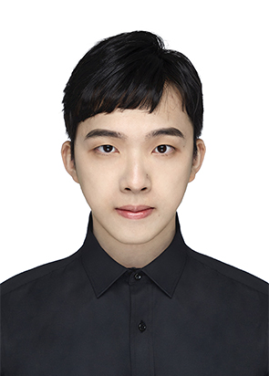
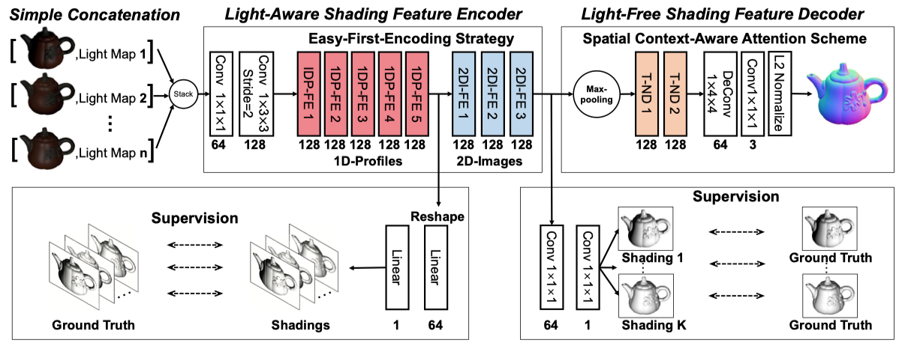
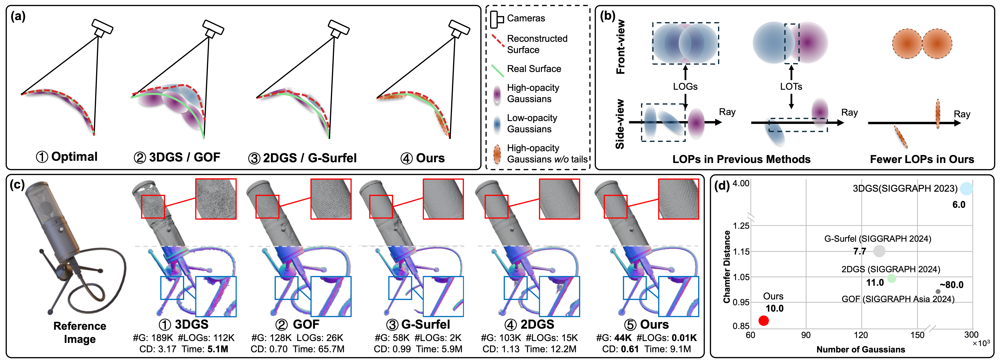
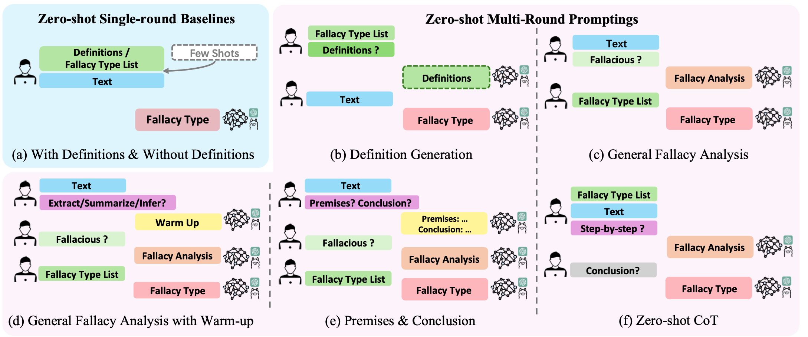
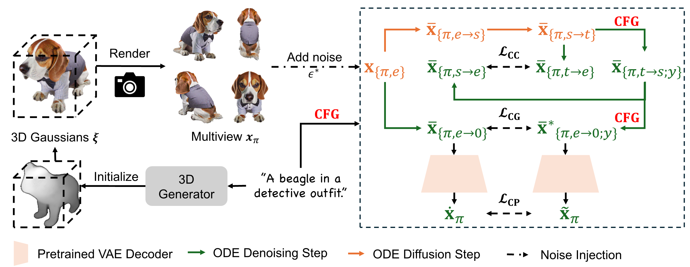
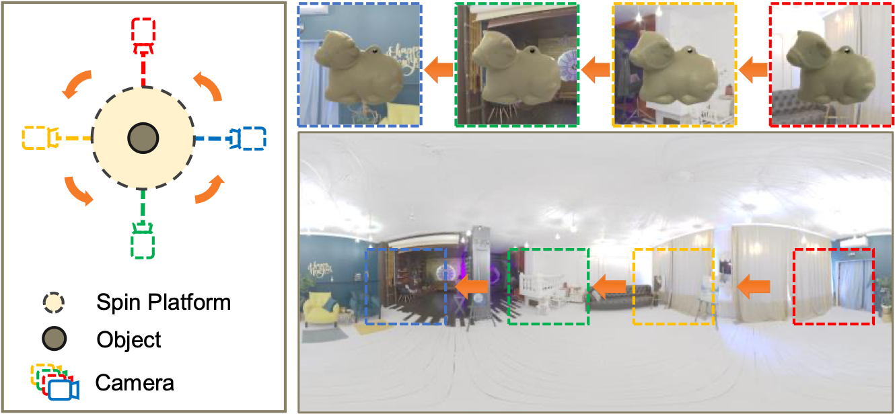
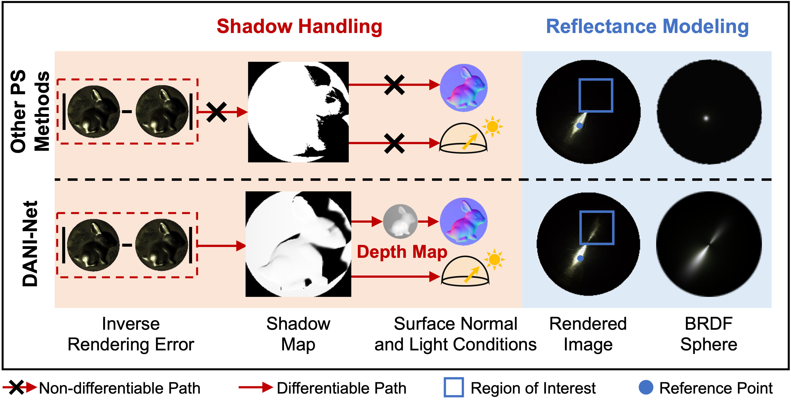
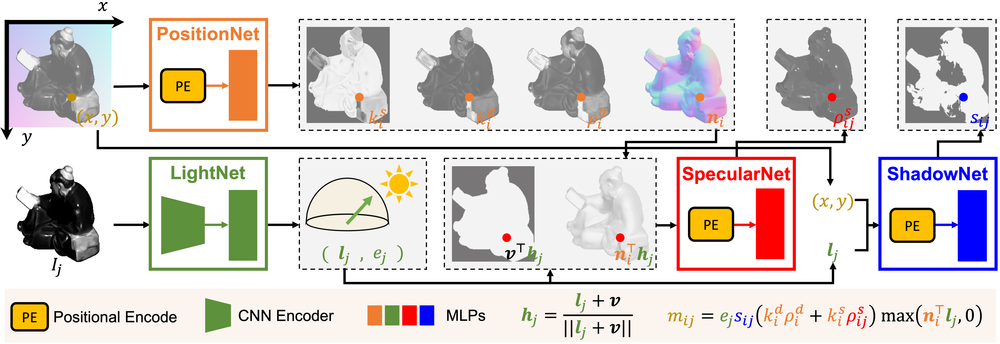

|
Zongrui Li
I am a fourth-year Ph.D. student at the Rapid-Rich Object Search Lab (ROSE) at Nanyang Technological University (NTU), supervised by Prof. Jiang Xudong and Dr. Qian Zheng. I received the Master degree at the School of Electrical and Electronic Engineering, NTU, majoring in computer control and automation, and the Bachelor degree at the School of Traffic and Transportation, Beijing Jiaotong University (BJTU), majoring in Intelligent Transportation Engineering.
My research interests are broad due to my interdisciplinary background. Previously, I was mainly working on reinforcement learning and multi-agent systems. Now, I focus more on computer vision and computer graphics, working on projects involving PBR, photometric stereo, NeRF, and generative model (especially for 3D generation).
Email /
Google Scholar /
Github / CV
|

|
- Aug. 2020 - Aug. 2021, Research intern at Institute for Infocomm Research (I2R), A*STAR, Singapore.
- Apr. 2019 - Apr. 2020, Research intern at Institute of Software, Chinese Academy of Sciences, China.
Publication
(# corresponding author, * equal contribution)
|
|

|
Revisiting Supervised Learning-Based Photometric Stereo Networks
Xiaoyao Wei, Zongrui Li# , Binjie Ding, Boxin Shi, Xudong Jiang, Gang Pan, Qian Zheng# , Yanlong Cao#
IEEE Transactions on Pattern Analysis and Machine Intelligence (TPAMI), 2025
|
|

|
Spiking GS: Towards High-Accuracy and Low-Cost Surface Reconstruction via Spiking Neuron-based Gaussian Splatting
Weixing Zhang*, Zongrui Li*, De Ma, Huajin Tang, Xudong Jiang, Qian Zheng, Gang Pan
arXiv Preprint, 2024
[code][arXiv]
|
|

|
Are LLMs Good Zero-Shot Fallacy Classifiers?
Fengjun Pan*,
Xiaobao Wu*,
Zongrui Li,
Anh Tuan Luu
In Conference on Empirical Methods in Natural Language Processing (EMNLP), 2024
[arXiv]
|
|

|
Connecting Consistency Distillation to Score Distillation for Text-to-3D Generation
Zongrui Li*,
Minghui Hu*,
Qian Zheng,
Xudong Jiang
European Conference on Computer Vision (ECCV), 2024
[project page] [arXiv]
A text-to-3D generation method based on consistency distillation and score distillation.
|
|

|
Spin-UP: Spin Light for Natural Light Uncalibrated Photometric Stereo
Zongrui Li*, Zhan Lu*, Haojie Yan, Boxin Shi, Gang Pan, Qian Zheng, Xudong Jiang
The IEEE/CVF Conference on Computer Vision and Pattern Recognition (CVPR), 2024
[project page] [arXiv]
Solving natural light uncalibrated photometric stereo by neural inverse rendering.
|
|

|
DANI-Net: Uncalibrated Photometric Stereo by Differentiable Shadow Handling, Anisotropic Reflectance Modeling, and Neural Inverse Rendering
Zongrui Li, Qian Zheng, Boxin Shi, Gang Pan, Xudong Jiang
The IEEE/CVF Conference on Computer Vision and Pattern Recognition (CVPR), 2023
[project page] [arXiv] [bibtex]
A NeRF-style inverse rendering framework for complex surface and anisotropic material reconstruction under uncalibrated photometric stereo setup.
|
|

|
NeIF: Representing General Reflectance as Neural Intrinsics Fields for Uncalibrated Photometric Stereo
Zongrui Li, Qian Zheng, Feishi Wang, Boxin Shi, Gang Pan, Xudong Jiang
arXiv Preprint, 2022
[arXiv]
|
Conference Reviewer: CVPR, AAAI, WACV, NeurIPS, ICIVC.
Modefied from Jon Barron.
Last updated October 2024.
|
|
{kind=link}